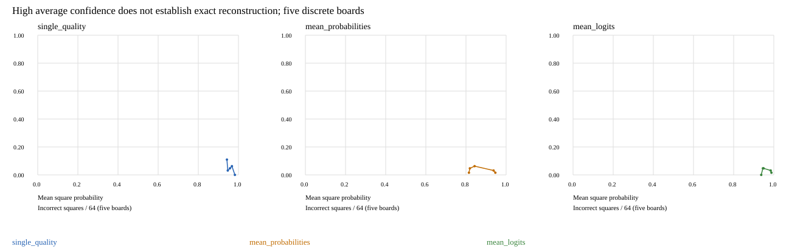
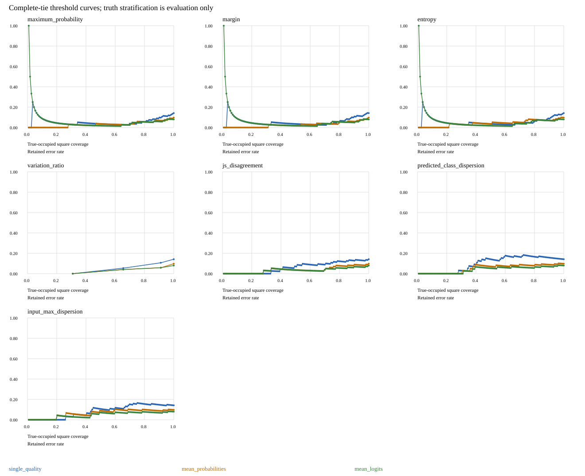
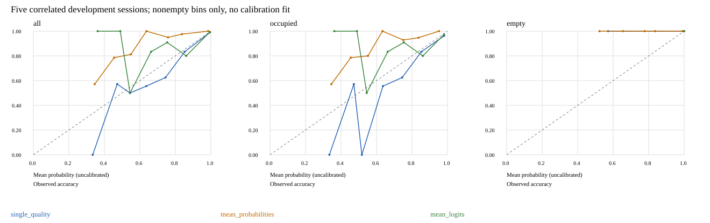

Independent validation pending; no safe operating threshold established. Points are discrete observations; connecting lines are visual guides.



Confidence-bin counts · Three case studies and uncertainty values